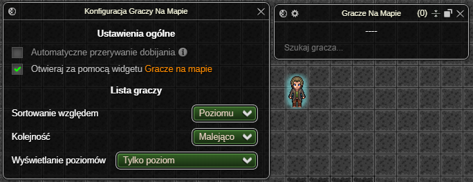
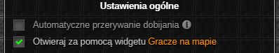
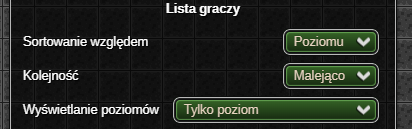
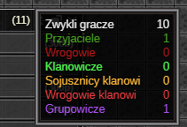
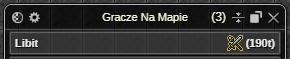
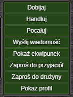
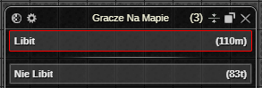
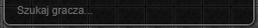

⚠️ UWAGA: Dopóki zestaw nie osiągnie stabilnej wersji (1.0.0) mogą pojawiać się błędy oraz zmiany podstawowych funkcjonalności (Zgłaszanie Błędów)
Gracze Na Mapie
Dodatek wyświetla listę graczy znajdujących się w aktualnej lokacji, umożliwiając interakcje z każdym z nich.

Okno Ustawień
Ustawienia ogólne
- 🔒 Funkcja Premium 🔒 Możliwość automatycznego przerwania dobijania gracza, w przypadku:
- zmiany trasy przez bohatera przed dotarciem do celu,
- opuszczenia przez cel zasięgu ataku.

Możliwość otwierania okna aktywnych ustawień za pomocą wbudowaniego do gry widgetu Gracze na mapie.
Lista graczy

- Dostępne opcje sortowania listy to sortowanie względem:
- poziomu - w przypadku takiego samego poziomu gracze sortowani są alfabetycznie,
- nicku,
- profesji - sortowanie dzieli listę na grupy profesji, które ustawiane są w zależności od ilości graczy o danej profesji. Wewnątrz poszczególnych grup gracze sortowani są malejąco według poziomu, następnie alfabetycznie według nicku.
- Kolejność sortowania pozwala wybrać "kierunek" sortowania - malejący lub rosnący.
- Wyświetlanie poziomów określa w jaki sposób wyświetlać poziomy graczy z listy. Dostępne opcje to:
- Poziom | Poziom operacyjny
- Poziom operacyjny | Poziom
- Tylko poziom operacyjny
- Tylko poziom
Okno Aktywnych Ustawień
Licznik graczy

Po najechaniu na licznik graczy myszką wyświetlana jest szczegółowa lista relacji graczy znajdujących się w bieżącej lokacji. Ze względu na mechanikę gry, jeżeli gracz jest jednocześnie np. przyjacielem oraz klanowiczem pod uwagę będzie brana tylko ważniejsza1 relacja.
Lista graczy
Tabela z graczami znajdującymi się w aktualnej lokacji, w zawartość pojedynczej komórki gracza wchodzą:

- nick,
- lista okazywanych aktualnie emocji,
- poziom,
- profesja.
Komórka jest kolorowana w zależności od relacji oraz przynależności do grupy gracza. Dodatkowe informacje wyświetlane po najechaniu myszką to m.in. nazwa klanu i outfit.
Po dwukliku LPM na komórkę gracza, bohater automatycznie do niego podejdzie.
Po kliknięciu PPM na komórkę gracza dostępne jest menu kontekstowe w skład którego wchodzą opcje:

- 🔒 Funkcja Premium 🔒
Dobijaj- wyznacza gracza na cel:- po wybraniu tej opcji bohater podejdzie do celu i będzie go atakować, dopóki m.in. przeciwnik się nie teleportuje lub nie rozpocznie się walka.
- ✅ Funkcja Non-Premium ✅
Atakuj- wyznacza gracza na cel (działa tak samo jak opcja z gry). Handluj- podchodzi do gracza oraz wysyła żądanie handlu.Pocałuj- całuje gracza (dostępne od 30 poziomu doświadczenia).Karmazynowe błogosławieństwo- podchodzi do gracza oraz rzuca na niego karmazynowe błogosławieństwo.Wyślij wiadomość- rozpoczyna proces wysyłania wiadomości prywatnej do gracza (dostępne jeżeli gracz nie jest wrogiem bohatera).Pokaż ekwipunek- otwiera okno z ekwipunkiem gracza.Zaproś do przyjaciół- zaprasza gracza do przyjaciół.Zaproś do drużyny- zaprasza gracza do drużyny.Pokaż profil- otwiera okno z profilem gracza.

Po wybraniu gracza jako celu ataku, zostaje on automatycznie przeniesiony na szczyt listy graczy.W takiej sytuacji – a także po najechaniu kursorem na jego komórkę lub kliknięciu jej PPM – pojawia się strzałka wskazująca jego pozycję. Dodatkowo gracz-cel renderowany jest nad wszystkimi obiektami na mapie i otoczony wyraźną ramką.
Wyszukiwarka graczy

Wyszukiwarka u dołu listy umożliwia filtrowanie graczy po nicku.
Ostatnia aktualizacja: 0.14.4
-
W planach i tak jest obejście więc nie bd tego tłumaczył jo. ↩